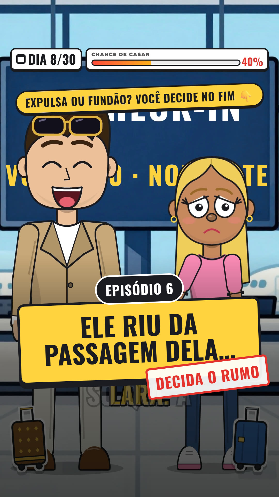
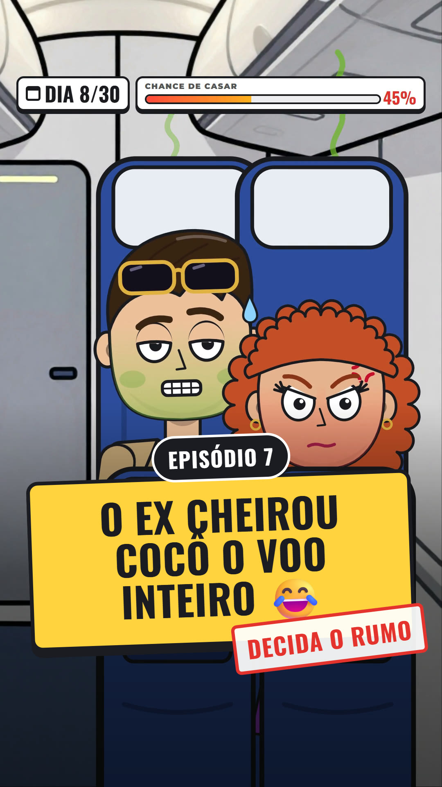
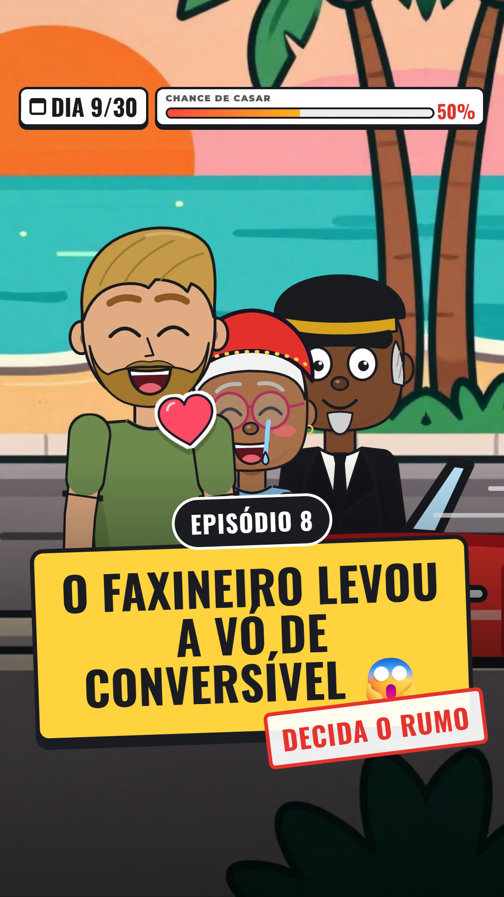
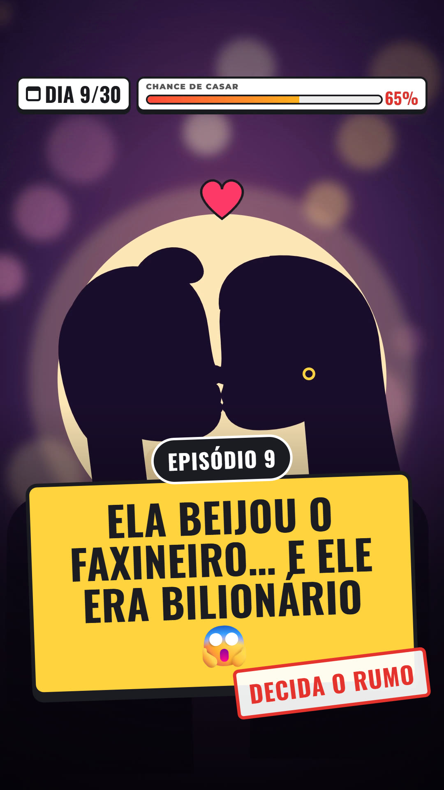

E se o seu noivo te traísse com a sua prima? 😳 O faxineiro do Burgão já sabia de tudo… e esse faxineiro é bilionário. 💰 Ele tomou banho na casa da Lara, saiu DE TOALHA 🚿 e a mãe dela viu tudo por vídeo. Agora ele é o "noivo" e foi chamado pros 90 anos da vó, lá no Nordeste. ✈️🎂 Só que hoje cedo uma cliente deixou o telefone num guardanapo… pro faxineiro. E faltam 25 dias pra ele casar. Você decide o rumo: ✈️ VIAJA: vai com a Lara, de noivo de mentira 📝 FICA: fica na cidade e liga pra moça do guardanapo Comenta uma palavra. A mais votada vira o episódio 6! 👇 Manda pra sua mãe. 😂 #novelinha #historia #desenhoanimado #milionario #romance #decidaorumo

Baixar capaE se você pegasse o mesmo avião que o seu ex que te traiu? 😳✈️ A Lara pagou as piores cadeiras do avião com as gorjetas, de frente pro banheiro fedorento. 🚽 O Murilo chegou com a prima se exibindo de EXECUTIVA… e ainda riu dela. Só que a atendente leu o documento do "faxineiro"… e gelou. 👀 Você decide o rumo: 🚫 EXPULSA: tira o Murilo e a prima do voo 🚽 FUNDÃO: eles voam de frente pro banheiro fedorento Comenta uma palavra. A mais votada vira o episódio 7! 👇 Segue a página pra não perder o episódio 7! ✅ E marca aquela amiga que já foi traída. 😂 #novelinha #historia #desenhoanimado #milionario #romance #decidaorumo

Baixar capaSe o seu ex que te traiu passasse o voo inteiro cheirando cocô, você ia amar, né? 💩✈️ Vocês escolheram FUNDÃO: o Murilo e a prima foram parar na fileira 38, de frente pro banheiro. 🚽 E o Tuca ainda deu um cascudo no Murilo e soltou uma bomba no banheiro do fundão… 😂 Só que no desembarque o Murilo entregou que o "genro diretor" é faxineiro… e ainda desafiou: "quero ver o presente que o faxineiro vai dar pra vó nos 90 anos". 😳 E agora, o que o Tuca faz? 🧹 MANTÉM: segue disfarçado de faxineiro e engole essa 🎁 DESAFIA: chama o Murilo pra ver quem dá o melhor presente pra vó Comenta uma palavra. A mais votada vira o episódio 8! 👇 Segue a página pra não perder o episódio 8! ✅ E marca aquela amiga que queria ver o ex nessa situação. 😂 #novelinha #historia #desenhoanimado #milionario #romance #decidaorumo

Baixar capaE se o seu ex, que te traiu, humilhasse o seu namorado na frente da sua família inteira? 😤 Só que esse namorado é bilionário. 😏 Vocês mandaram o Tuca desafiar o Murilo, e o aperto de mão já deixou ele na pontinha do pé. 😂 Nos 90 anos da vó Zefa, o Murilo deu um jogo de panelas da promoção… e a vó: "Quer que eu cozinhe no meu aniversário?" 🤣 Aí o Seu Bené chegou de conversível pra levar a vó pra ver o mar pela primeira vez. 🌅 "É alugado!" "Não é meu, não. É do meu patrão." (O patrão dele é ele mesmo. 🤫) Só que, na volta, a Lara puxou o Tuca de lado: "Que patrão empresta um carro desse pra um faxineiro?" 😳 E agora, o que o Tuca faz? 💼 CONTA: conta que é o dono da Valente (e ela pode se sentir enganada) 🤥 INVENTA: inventa uma história (e mente pra quem já foi traída) Comenta uma palavra. A mais votada vira o episódio 9! 👇 Segue a página pra não perder o episódio 9! ✅ E marca aquele amigo que daria panela de presente igual o Murilo. 😂 #novelinha #historia #desenhoanimado #milionario #romance #decidaorumo

Baixar capaE se você tivesse que ser traída… pra encontrar o amor de verdade? 💔❤️ A Lara foi. E o amor de verdade tava esfregando o chão do Burgão. 🧹 De volta da praia, a família inteira gritou: "BEIJA! BEIJA! BEIJA!" 😂 A vó: "Eu não tenho a vida toda, não! Beija logo!" 👵 O Tuca se declarou… e a Lara beijou. 💋 Só que, logo depois, veio a verdade: "Meu nome não é Tuca. É Arthur. Arthur Valente." 😱 "Eu inventei um noivo pra minha mãe… e o noivo inventado mentiu mais que eu!" 😤 E aí a Dona Socorro chegou: "Por que a minha filha tá chorando?" 👀 E agora, o que a Lara faz? 📣 CONTA: conta pra família que ele é o Arthur Valente (e a Dona Socorro espalha pra cidade inteira) 🤫 SEGREDO: guarda segredo e protege ele (e passa a mentir pra própria mãe) Comenta uma palavra. A mais votada vira o episódio 10! 👇 Segue a página pra não perder o episódio 10! ✅ E marca aquela amiga que precisou ser traída pra achar o amor de verdade. 😏 #novelinha #historia #desenhoanimado #milionario #romance #decidaorumo